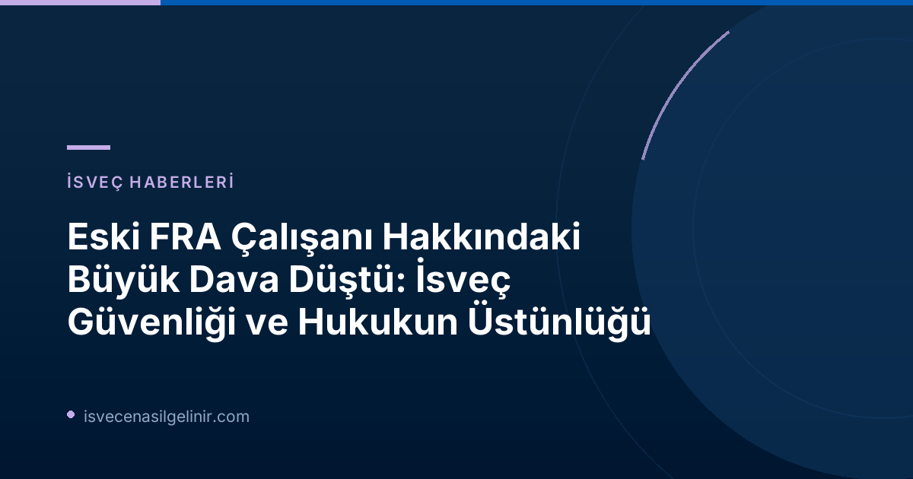

İsveç Ulusal Güvenliği ve Yargı Sürecinde Dikkat Çeken Gelişme
İsveç'in en kritik güvenlik kurumlarından biri olan Savunma Radyo Kurumu (FRA) ile ilgili yürütülen ve kamuoyunda geniş yankı uyandıran bir soruşturma, önemli bir kararla sonuçlandı. Eski bir FRA çalışanına yönelik "ağır yetkisiz bilgi edinme" ve "ağır veri ihlali" suçlamalarıyla başlatılan ön soruşturma, Başsavcı Per Lindqvist tarafından düşürüldü.
Bu dava, İsveç'in istihbarat ve güvenlik alanındaki hassasiyetini, yargı süreçlerindeki titizliği ve ulusal güvenlik ile bireysel haklar arasındaki hassas dengeyi bir kez daha gözler önüne serdi. Dava sürecine dair merak edilen tüm detayları ve İsveç'teki göçmenlik, vatandaşlık gibi konulardaki yasal süreçleri İsveç Vatandaşlık Testi rehberimizden takip edebilirsiniz.
Soruşturmanın Kapatılma Gerekçeleri Nelerdi?
Başsavcı Per Lindqvist, soruşturmanın kapatılmasının ana nedeninin "suçun kanıtlanamaması" olduğunu belirtti. Lindqvist, bu durumun şüpheli kişinin masum kabul edilmesi gerektiği anlamına geldiğini vurguladı, zira konu mahkemede hiçbir zaman yargılanmayacak. Ancak bu kararın ardında daha derin bir neden yatıyor:
Önemli Bilgi: FRA'nın Tanık Engeli
Savcılık makamının açıklamasına göre, ön soruşturmanın düşürülmesinin temel nedeni, FRA'nın bazı çalışanlarının tanıklık yapmasını engellemesiydi. FRA, İsveç'in güvenliğini riske atabilecek gizli bilgileri koruma hakkını kullanarak bu beyanlara izin vermedi. Başsavcı Lindqvist, FRA'nın bu kararının "tamamen makul göründüğünü" ifade etti.
Dava Sanık Avukatından ve Savunma Bakanlığından Tepkiler
Eski FRA çalışanının kamu avukatı Kristofer Stahre, soruşturmanın düşürülmesini "sevindirici bir haber" olarak nitelendirdi. Ancak Stahre, İsveç Güvenlik Polisi (Säpo) ve Savcılık kurumu aleyhine ciddi eleştirilerde bulundu:
| Taraflar | Açıklama |
|---|---|
| Avukat Kristofer Stahre | "Bu durum müvekkilim için son derece büyük sonuçlar doğurduğu için derin bir trajedidir. Suçsuz olduğu anlaşılan kişilere bu şekilde davranılması son derece üzücü. 2,5 yıl süren bu soruşturma, savcılıkta bir ‘ekşimiş hamur’ haline geldi. Keşke bu durum çok daha erken tespit edilebilseydi." |
| Savunma Bakanlığı | Kara gücü tarafından yapılan açıklamada, soruşturmanın düşürülmesi "sevindirici bir haber" olarak değerlendirildi. |
Soruşturmanın Kronolojisi
| Tarih | Olay |
|---|---|
| Ekim 2023 | Kadın çalışan ve eşi, dramatik bir şafak baskınıyla gözaltına alındı. |
| 13 Aralık 2023 | Her ikisi de bu tarihe kadar tutuklu kaldı. |
| Eylül 2024 | Savunma Kuvvetleri'nde çalışan eşi hakkındaki şüpheler düşürüldü. |
| 1 Temmuz 2026 | Eski FRA çalışanı hakkındaki ön soruşturma düşürüldü. |
Başsavcı Lindqvist, gözaltı gibi müdahaleci tedbirlerin "hafif karar verilmediğini, aksine dikkatli değerlendirmelerle öncelendiğini" belirtti. Ancak şu anki durumda, mahkûmiyet kararı olmadığı için kişinin masum kabul edilmesi gerektiğini yineledi.
İsveç Savunma Radyo Kurumu (FRA) Nedir?
FRA (Försvarets radioanstalt), İsveç'in ulusal güvenlik ve istihbarat alanında faaliyet gösteren stratejik bir kurumudur. Temel görevi, yabancı sinyal istihbaratı toplamak (SIGINT) ve İsveç'in dış tehditlere karşı korunmasına yardımcı olmaktır. Sızdırılan veya yetkisiz erişilen bilgilerin, ülkenin savunma kapasitesini ve uluslararası ilişkilerini ciddi şekilde etkileyebileceği düşünüldüğünde, FRA personelinin gizlilik ve bilgi güvenliği konusunda taşıdığı sorumluluk büyük önem taşımaktadır.
Bu olay, İsveç'in hassas güvenlik birimlerinde görev yapan kişilerin karşılaştığı yüksek riskleri ve bu tür davaların ulusal güvenlik perspektifinden ne kadar dikkatle ele alındığını bir kez daha ortaya koymuştur. Aynı zamanda, yargı sisteminin bireysel özgürlükleri ve masumiyet karinesini koruma çabasını da göstermektedir. İsveç vatandaşlık süreci, yasal haklar ve daha fazlası hakkında bilgi almak için sverigemedborgarskapsprov.com adresini ziyaret edebilirsiniz.
Referanslar:
İsveç Göçmenlik Süreçleri Hakkında Daha Fazla Bilgi Edinin
İsveç'e gelmek, burada yaşamak veya vatandaşlık almakla ilgili aklınızdaki tüm sorular için uzman danışmanlarımızla iletişime geçin.